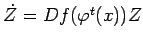
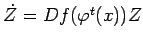
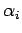
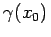

Inhalt Index DeskTop Bronstein

 Dynamische Systeme und Chaos Quantitative Beschreibung von Attraktoren Lyapunov-Exponenten
Dynamische Systeme und Chaos Quantitative Beschreibung von Attraktoren Lyapunov-Exponenten


Die Formel , wobei wieder als Halbachsenlängen eines aus der Einheitskugel mit Mittelpunkt x durch Deformation mit  hervorgegangenen Ellipsoids interpretiert werden können, kann zur Berechnung der LYAPUNOV-Exponenten benutzt werden, wenn außerdem noch Reorthonormalisierungsverfahren, wie das von HOUSHOLDER, herangezogen werden. Die Funktion
hervorgegangenen Ellipsoids interpretiert werden können, kann zur Berechnung der LYAPUNOV-Exponenten benutzt werden, wenn außerdem noch Reorthonormalisierungsverfahren, wie das von HOUSHOLDER, herangezogen werden. Die Funktion  ist Lösung der zum Semiorbit
ist Lösung der zum Semiorbit  des Flusses
des Flusses  gehörigen Variationsgleichung mit Anfang v zur Zeit
gehörigen Variationsgleichung mit Anfang v zur Zeit  . In der Tat, ist der Fluß von (17.1), so lautet die Variationsgleichung . Die Lösung dieser Gleichung mit Anfang v zur Zeit t = 0 ist darstellbar als , wobei die bei t = 0 normierte Fundamentalmatrix der Variationsgleichung ist, die, nach dem Satz über die Differenzierbarkeit nach den Anfangszuständen, Lösung der Matrix-Differentialgleichung  mit Anfang Z(0) = En ist.
. In der Tat, ist der Fluß von (17.1), so lautet die Variationsgleichung . Die Lösung dieser Gleichung mit Anfang v zur Zeit t = 0 ist darstellbar als , wobei die bei t = 0 normierte Fundamentalmatrix der Variationsgleichung ist, die, nach dem Satz über die Differenzierbarkeit nach den Anfangszuständen, Lösung der Matrix-Differentialgleichung  mit Anfang Z(0) = En ist.
Die Zahl beschreibt das Verhalten der Orbits , mit Anfang bezüglich des Ausgangsorbits  in der Richtung
in der Richtung  . Ist , so heißt dies, daß in Richtung v für wachsende t eine Annäherung der Orbits stattfindet; ist dagegen , so entfernen sich die Orbits (s. Abbildung).
. Ist , so heißt dies, daß in Richtung v für wachsende t eine Annäherung der Orbits stattfindet; ist dagegen , so entfernen sich die Orbits (s. Abbildung).
Für die Summe aller LYAPUNOV-Exponenten von  mit dem Attraktor
mit dem Attraktor  und dem dort konzentrierten invarianten Maß
und dem dort konzentrierten invarianten Maß  gilt für
gilt für  -fast alle
-fast alle  im Falle eines Flusses von (17.1)
im Falle eines Flusses von (17.1)
| (17.39a) |
und für ein zeitdiskretes System (17.3)
| (17.39b) |
In dissipativen Systemen gilt also . Dies, zusammen mit der Tatsache, daß für Flüsse einer der LYAPUNOV-Exponenten Null ist, falls der Attraktor keine Ruhelage ist, gestattet Vereinfachungen bei der Berechnung der LYAPUNOV-Exponenten (s. Lit. 17.16).
| Beispiel A |
|
Sei x0 eine Ruhelage des Flusses von (17.1) und seien  die Eigenwerte der JACOBI-Matrix in |
| Beispiel B |
|
Sei ein T-periodischer Orbit von (17.1), und es seien die Multiplikatoren von . Mit dem in |